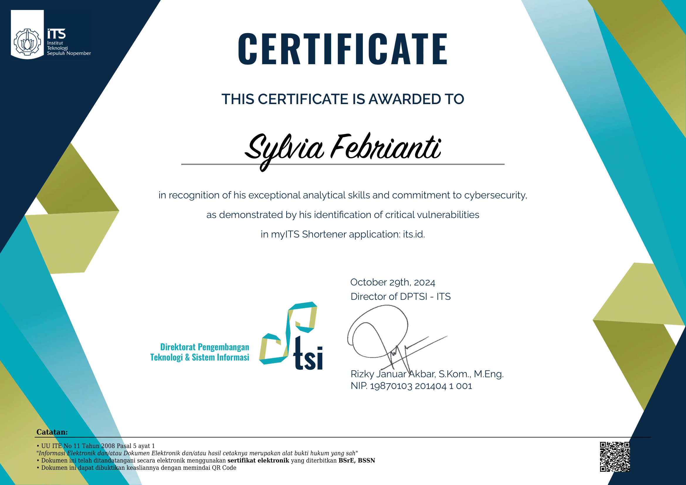

Certificate of Appreciation

Sylvia Febrianti
I am a final-year Information Technology student with a strong interest in QA Automation and Software Quality Engineering, supported by a solid foundation in cybersecurity and application security testing. I have hands-on experience in manual and automated testing, API validation, performance testing, and Golang-based UAT, working on large-scale web and fintech-related systems.
My experience spans across test case design, regression testing, system integration flows, and backend service validation, where I focus on ensuring system reliability, performance, and correctness. I have also applied UI automation using Playwright to improve testing efficiency, while maintaining a strong understanding of testing fundamentals and quality processes.
In addition to QA, I bring added value through my background in penetration testing and vulnerability assessment, having contributed to multiple security assessments and risk reduction initiatives. I am actively involved in the tech community through CTF events, training sessions, and mentoring, which strengthens my analytical thinking and problem-solving skills.
Currently pursuing my Bachelor's degree at Institut Teknologi Sepuluh Nopember (ITS), I am driven to grow as a QA Engineer who understands both quality and security, and committed to delivering reliable, scalable, and secure software systems.
Below is my professional experience across QA Engineering, test automation, application security, and technical education. These roles have strengthened my ability to ensure software quality, reliability, and security in both product and academic environments.
• Designed test cases, test plans, and testing scope for GrabKios services, including integration flows with payment services
• Performed manual testing, API testing, and API-level automation using Postman, SQL, and Charles Proxy (15+ critical endpoints)
• Executed performance, integration, and basic security testing using Locust and Golang-based UAT
• Performed manual testing on core web and mobile features with partial UI automation using Playwright
• Automated ~20–30% of critical UI scenarios to support regression testing and reduce manual effort
• Designed reusable test cases including BDD-style Gherkin scenarios and collaborated with QA leads
• Assisted in conducting initial penetration tests on web applications and network environments
• Identified security vulnerabilities and produced structured, actionable security assessment reports
• Collaborated with IT and security teams during remediation and retesting phases
• Conducted penetration testing across 20+ subdomains and critical academic services
• Identified high-risk vulnerabilities such as SQL Injection and provided mitigation recommendations
• Secured sensitive data access affecting 25,000+ students and 1,000+ staff records
• Delivered hands-on ethical hacking lab sessions for 90+ students
• Designed practical exam questions and lab-based assessments
• Achieved ~80% practical comprehension rate through structured evaluations
• Developed data structure problem sets with detailed solution explanations
• Guided 90+ students in problem-solving and algorithmic thinking
• Managed lab assessments and grading using online platforms
• Reviewed and validated CTF challenges for technical accuracy and balanced difficulty
• Authored guidebooks and solution walkthroughs for 100+ participants
• Provided real-time technical troubleshooting during live competition events
Recognition received for discovering and responsibly reporting security vulnerabilities, contributing to safer digital environments.
Professional certifications and training achievements demonstrating expertise in cybersecurity, ethical hacking, and digital forensics.
An overview of my core competencies in QA Engineering, test automation, and application security, developed through academic projects and industry experience.
Let's connect! Feel free to reach out for collaborations, opportunities, or just a friendly conversation about cybersecurity.